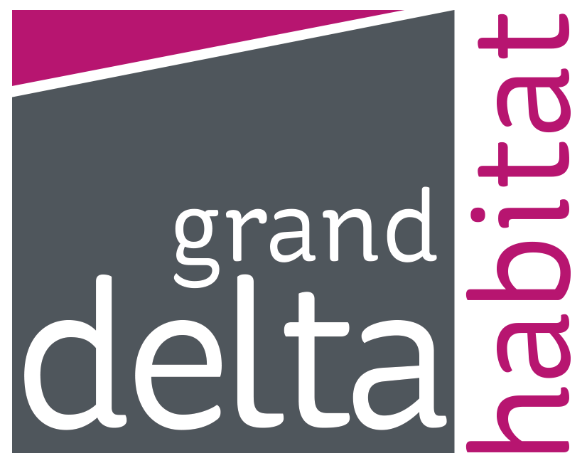

Qui suis-je ?
Passionné par l'informatique et les nouvelles technologies depuis ma plus tendre enfance, c'est donc naturellement cette voie que j'ai décidé de suivre lors de mes études en choisissant une formation de Concepteur Développeur d'Application auprès de 2iTech.
Ayant la chance d'être suivie par Grand Delta Habitat lors de mon aventure dans le domaine de l'apprentissage. Ils ont eu le courage de me recruter en tant qu'alternant depuis plus de deux ans.
Grand Delta Habitat est un bailleur social où le siège est situé à Avignon. J'y travaille en tant que chargé de projets informatiques dans la Direction des Systèmes d'Informations. Mon rôle est de trouver des solutions informatiques via du développement d'application web afin de faciliter les différentes tâches réalisées par les salariés et les clients.
Compétences
Développement d'application WEB/LOURD
Comme dit juste avant, je suis passionné par les nouvelles technologies. Quoi de mieux que devenir développeur pour pouvoir jouer, apprendre et connaître ces dernières. Je considère chaque nouveau projet comme une épreuve et non comme du travail. Vivre de ma passion, voilà ce dont j'ai toujours rêvé
HTML

CSS

JS

PHP

MYSQL

C#